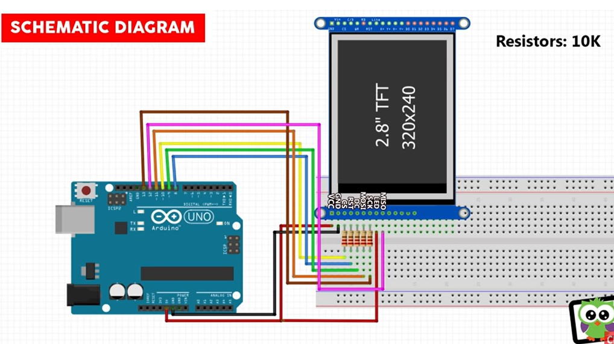
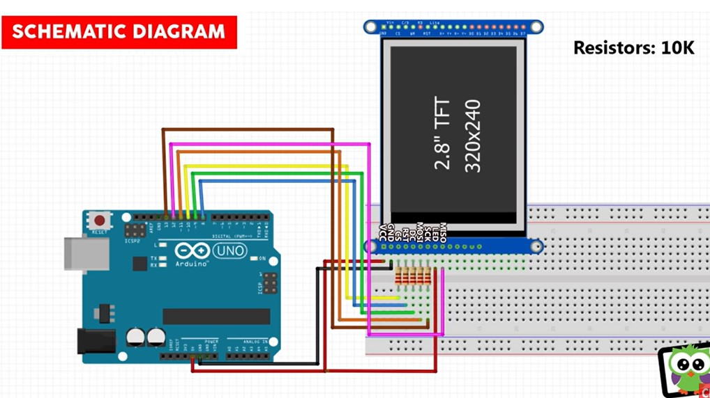
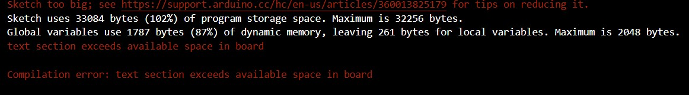

Introduction
This week the goal was to work with Output Devices. This is another important week thus far in the context of preparing
for the final project. For my final project, I will rely on some pretty solid communication between input devices and output devices,
which is not the most enjoyable thing in the world to create.
There are two major "output" devices for my final project, 1 is the digital display and the other are the pumps. The pumps I hope to
address in the week we spend on stepper motors, so this week was centralized on working on understanding how to use a digital display
system.
TFT Display
So there are two major kinds of displays, TFT and OLED. I went for a TFT, which stands for a Thin Film Transistor Display. The big
advantages of it are its longer life span and larger screen sizes. I am working with a 2.8 inch display which should be just the
perfect size for the display on my BarBot.
There are two main things the display is meant to handle. 1 is the menu function that will correspond with the User inputted actions
with buttons to scroll through the features of the BarBot. The other function will be to display steps and instructions for crafting
a cocktail. The approach I have settled on is to create bitmap images of each potential display, and then whenever the screen needs to
display something alternative, the new corresponding bitmap will be loaded to the display.

Wiring up the board was not the most difficult thing in the world, it was a lot of different connections, and the online resources were
typically for alternative TFT boards, but I managed to get it figured out. The harder step was getting the SD card that is built into
the TFT board to function correctly. It involved essentially having a separate Master-Slave connection system on the TFT for the SD
reading. But after being able to wire everything, I was able to load up a bitmap file I created and have it display to the screen.

 


Combining Inputs and Outputs
As you can see, this is a slightly slow process to update the screen, but everything looks great! The next step is to create a few more
bitmaps. I think the goal for this week is to have the NFC reader that I programmed last week to determine the graphic displayed on
the TFT display. So, I went about creating the integration for an arduino script that has both the input and output devices working together,
And I unfortunately ended up with this error.

The Arduino Uno apparently has a very limited onboard storage for scripts. The TFT libraries for uploading bitmaps to the screen and accessing
the SD card are extremely large, and when combined with the libraries for the NFC sensor, it actually exceeds the storage allocation, and
thus I couldn't upload my script! So this was a bit of a bummer, the solution to this long term is to shift over to the ESP32 which has
significantly more memory storage, but it will involve a decent amount of trouble shooting time for working with a different microcontroller,
so I am planning to take that time in the coming weeks, and for now use an alternative input device for testing.
So I shifted over to a simple button input, and whenever the button is pressed it will cycle through the graphics. This was good practice
for the programming challenges I will have with the multitasking and ensuring I dont overcrowd by output devices with information. I am using
a readButton() function that utilizes Millis for the button input, and whenever the button is pressed it will cycle a value between 1, 2, and 3.
Then the updateScreen() function
will see if that value corresponds to the graphic already on the display, if it is, then the screen does not update (to prevent backlogging),
and the value does not correspond to what is being displayed, it will update the display and not allow for the updating of the values with
the button.

So everything seems to be working well! I am glad with the progress that I was able to make on this, and while I wasn't able to integrate
the TFT display with the NFC inputs, the porting should be relatively simple to go from a button input to an NFC input once I transition
to the ESP32.
I also hooked up an oscilloscope to the clock mechanism of my TFT display and this is what the oscilloscope displayed:

I Hooked up between ground and the DC into the scope, and it sowed a naturally fluctuating signal. Once I pressed the button
to update the screen though, the signal being heavily more volatile. I believe this is due to the use of varying voltage values
to transmit information quickly on what should be displayed on the TFT screen. Super cool to see this in action.
As always, here is the code that I used for the final script.
Download my code
#include // Core graphics library
#include // Hardware-specific library
#include // SD card & FAT filesystem library
#include // SPI / QSPI flash library
#include // Image-reading functions
// Display Setup
#define USE_SD_CARD
// TFT display and SD card share the hardware SPI interface, using
// 'select' pins for each to identify the active device on the bus.
#define SD_CS 4 // SD card select pin
#define TFT_CS 10 // TFT select pin
#define TFT_DC 9 // TFT display/command pin
#if defined(USE_SD_CARD)
SdFat SD; // SD card filesystem
Adafruit_ImageReader reader(SD); // Image-reader object, pass in SD filesys
#else
// SPI or QSPI flash filesystem (i.e. CIRCUITPY drive)
#if defined(__SAMD51__) || defined(NRF52840_XXAA)
Adafruit_FlashTransport_QSPI flashTransport(PIN_QSPI_SCK, PIN_QSPI_CS,
PIN_QSPI_IO0, PIN_QSPI_IO1, PIN_QSPI_IO2, PIN_QSPI_IO3);
#else
#if (SPI_INTERFACES_COUNT == 1)
Adafruit_FlashTransport_SPI flashTransport(SS, &SPI);
#else
Adafruit_FlashTransport_SPI flashTransport(SS1, &SPI1);
#endif
#endif
Adafruit_SPIFlash flash(&flashTransport);
FatVolume filesys;
Adafruit_ImageReader reader(filesys); // Image-reader, pass in flash filesys
#endif
//Adafruit_ILI9341 tft = Adafruit_ILI9341(TFT_CS, TFT_DC,11,13,8,12);
Adafruit_ILI9341 tft = Adafruit_ILI9341(TFT_CS, TFT_DC,5,6,8,7);
Adafruit_Image img; // An image loaded into RAM
int32_t width = 0, // BMP image dimensions
height = 0;
// constants won't change. They're used here to set pin numbers:
const int buttonPin = 2; // the number of the pushbutton pin
const int ledPin = 3; // the number of the LED pin
// variables will change:
int buttonState = 0; // variable for reading the pushbutton status
int ScreenImage = 0;
int screen = 0;
long previousMillis = 0;
long interval = 500;
void setup() {
Serial.begin(9600);
// initialize the LED pin as an output:
pinMode(ledPin, OUTPUT);
// initialize the pushbutton pin as an input:
pinMode(buttonPin, INPUT_PULLUP);
ImageReturnCode stat; // Status from image-reading functions
#if !defined(ESP32)
while(!Serial); // Wait for Serial Monitor before continuing
#endif
tft.begin(); // Initialize screen
// The Adafruit_ImageReader constructor call (above, before setup())
// accepts an uninitialized SdFat or FatVolume object. This MUST
// BE INITIALIZED before using any of the image reader functions!
Serial.print(F("Initializing filesystem..."));
#if defined(USE_SD_CARD)
// SD card is pretty straightforward, a single call...
if(!SD.begin(SD_CS)) { // ESP32 requires 25 MHz limit
Serial.println(F("SD begin() failed"));
for(;;); // Fatal error, do not continue
}
#else
// SPI or QSPI flash requires two steps, one to access the bare flash
// memory itself, then the second to access the filesystem within...
if(!flash.begin()) {
Serial.println(F("flash begin() failed"));
for(;;);
}
if(!filesys.begin(&flash)) {
Serial.println(F("filesys begin() failed"));
for(;;);
}
#endif
Serial.println(F("OK!"));
// Fill screen blue. Not a required step, this just shows that we're
// successfully communicating with the screen.
tft.fillScreen(ILI9341_BLUE);
// Load full-screen BMP file 'purple.bmp' at position (0,0) (top left).
// Notice the 'reader' object performs this, with 'tft' as an argument.
tft.setRotation(3); // Set rotation
Serial.print(F("Loading nfc.bmp to screen..."));
stat = reader.drawBMP("/nfc.bmp", tft, 0, 0);
reader.printStatus(stat); // How'd we do?
delay(1000);
}
void readButton()
{
unsigned long currentMillis = millis();
if(currentMillis - previousMillis > interval)
{
buttonState = digitalRead(buttonPin);
if (buttonState == HIGH) {
// do nothing
}
else {
// turn LED off:
previousMillis = currentMillis;
screen += 1;
if (screen > 3)
{
screen = 1;
}
Serial.println(screen);
}
}
}
void loop() {
readButton();
updateScreen();
}
void updateScreen()
{
// make sure screen not already displaying correct info
if (!(screen == ScreenImage))
{
// update Screen
ScreenImage = screen;
if (screen == 0)
{
reader.drawBMP("/nfc.bmp", tft, 0, 0);
}
if (screen == 1)
{
reader.drawBMP("/mojito.bmp", tft, 0, 0);
}
if (screen == 2)
{
reader.drawBMP("/g&t.bmp", tft, 0, 0);
}
if (screen == 3)
{
reader.drawBMP("/whiskey sour.bmp", tft, 0, 0);
}
}
}